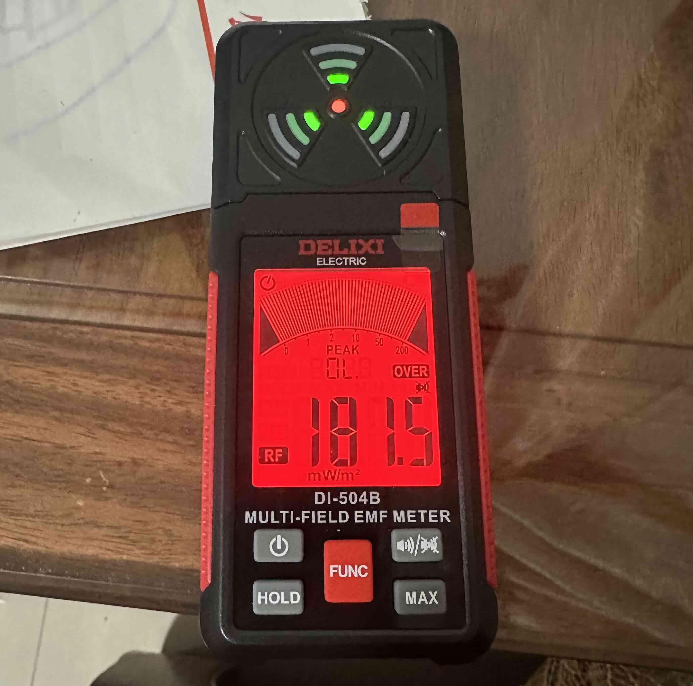

多功能電磁場計 | 原創，AI翻譯
我最近聽到謠言說5G基站可能會對人體造成傷害，這引起我的好奇，促使我進一步調查。為此，我購買了一台多場式電磁場儀來測量電磁場。EMF代表電磁場。
我進行了一項測試，以測量我家TP-LINK AX3000無線路由器不同距離的電磁場強度。結果如下：[1]
電磁場儀有三個測試模式：磁場、電場和射頻。在無線路由器測試中，我們使用了射頻模式。
上下移動手機可以產生磁場，電磁場儀可以檢測到。[2]
初步實驗表明，我周圍環境的射頻強度相當低，表明環境安全。這可能是因為我住在一座依山而建的公寓大廈中，導致4G和5G訊號接收不良。需要在不同地點進行更多測試才能得出更廣泛的結論。
單一時刻的低電磁場測量值不能保證電磁場強度始終保持在低水平。測量值在其他日子可能更高。
[1]:
 TP-Link路由器附近
TP-Link路由器附近
 距離TP-Link路由器10厘米
 距離TP-Link路由器30厘米
距離TP-Link路由器30厘米
 在我房間，距離TP-Link路由器3米
在我房間，距離TP-Link路由器3米
[2]:
 磁場
磁場